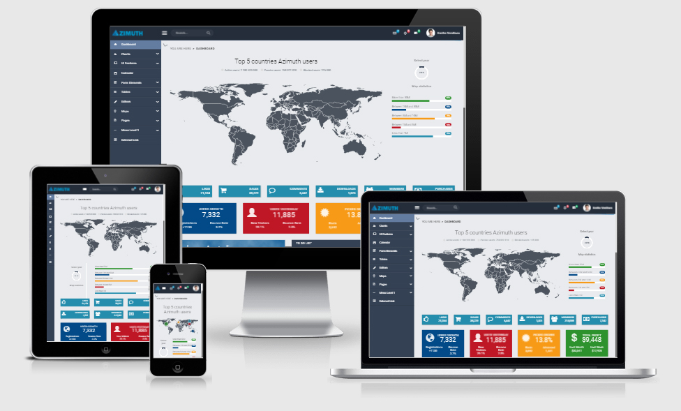
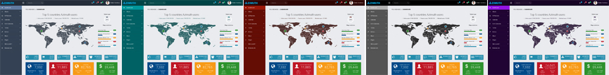
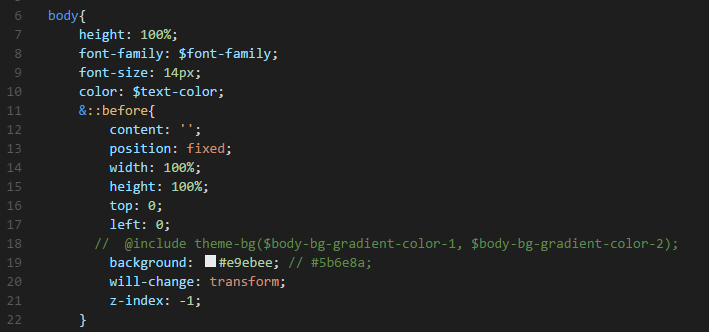
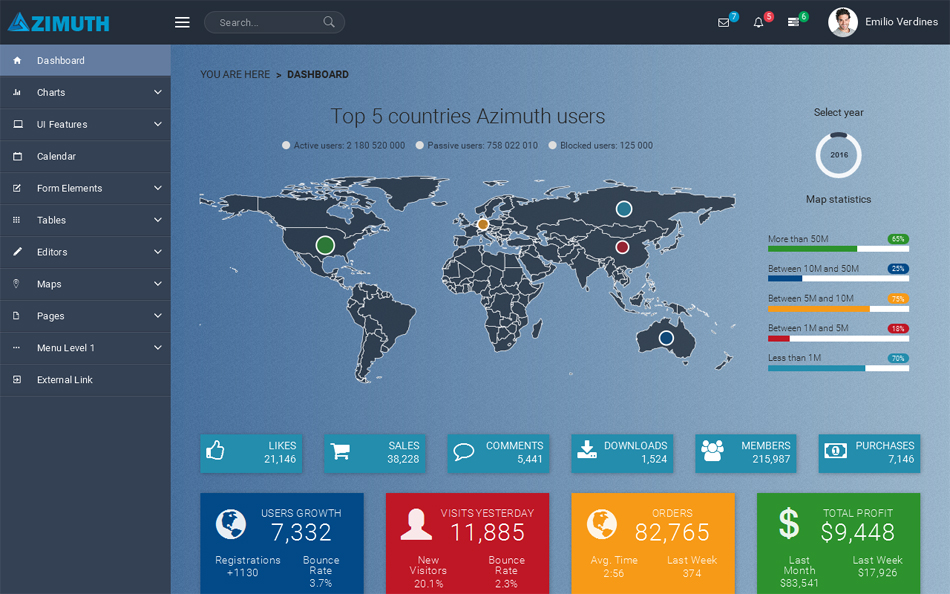

Azimuth
Admin template based on Angular 2, Bootstrap 4 and Webpack

- created: 14/12/2016
- latest update: 14/12/2016
- by: ThemeSeason
- email: admin@themeseason.com
Hello everyone!
Thank you for purchasing my template. If you have any questions that are beyond the scope of this help file, please feel free to email via my user page contact form here. Thanks so much!
Installation
Prerequisites
Although azimuth can be run without any development experience, it would be much easier if you already have some. The following instructions allow you to run a local copy on your machine.
Install tools
If you have not yet installed nodejs, please Download and globally install nodejs : https://nodejs.org
Note: Make sure you have Node version >= 4.0 and NPM >= 3 . Also globally installed typescript.
After the tools is installed, go inside of the template directory and install dependencies:
Run npm install to install node dependencies defined in package.json.
Running local copy
To run a local copy in development mode, execute npm start and go to http://localhost:3000 in your browser.
To run the local copy in production mode and build the sources, execute npm run build:prod. This will builds a production version of the application. All html,css and js code is minified and put to dist folder. The contents of this folder you can to put to your production server when publishing the application.
Project Structure
The directory structure of this template is as follows:
azimuth/ ├──config/ * webpack build configuration │ ├──helpers.js * helper functions for our configuration files │ │ │ ├──webpack.common.js * common webpack config │ │ │ ├──webpack.dev.js * development webpack config │ │ │ └──webpack.prod.js * production webpack config │ ├──src/ * source files that will be compiled to javascript │ ├──custom-typings.d.ts * custom typings for third-party modules │ │ │ ├──index.html * application layout │ │ │ ├──main.ts * entry file for our browser environment │ │ │ ├──polyfills.ts * polyfills file │ │ │ ├──vendor.ts * vendors file │ │ │ ├──app/ * application code - our working directory │ │ │ │ │ ├──app.component.ts * main application component │ │ │ │ │ ├──app.loader.ts * requires initial css styles (most important for application loading stage) │ │ │ │ │ ├──app.menu.ts * menu pages routes │ │ │ │ │ ├──app.module.ts * main application module │ │ │ │ │ ├──app.routes.ts * application routes │ │ │ │ │ ├──app.state.ts * application state for data exchange between components │ │ │ │ │ ├──app.color.ts * application colors functions │ │ │ │ │ ├──app.config.ts * application config parameters │ │ │ │ │ ├──app.scss * application styles │ │ │ │ │ ├──pages/ * application pages components, place where you can create pages and fill them with components │ │ │ │ │ └──theme/ * template global components/directives/pipes and styles │ │ │ └──assets/ * static assets are served here │ ├──README.md * read me file ├──tsconfig.json * config that webpack uses for typescript ├──package.json * what npm uses to manage its dependencies └──webpack.config.js * base webpack config
In our template we tried to separate the theme layer and presentation layer. We believe most of other templates have them combined. That’s why when you start developing using them, it gets very hard for you to remove things you don’t need.
Changing Skin Color
We tried to make the process of skin color customization as easy as possible.
By default Azimuth has five built-in skin color: blue (default blue skin), green, red, black and purple.

For change the skin color of theme do the following:
- Open
src\app\theme\styles\_variables.scssfile. - At the beginning of this file you find
@import "skins/blue"; - Change this line with another skin color name, for example:
@import "skins/green";
If you want to create your own skin color, please do the following:
- Create new skin color scss file in
src\app\theme\styles\skinsfolder, for example: _maroon.scss - Copy content of
src\app\theme\styles\skins\_blue.scsstosrc\app\theme\styles\skins\_maroon.scss - After this you must change values of variables in _maroon.scss, then change the skin color of theme (how to change the skin color of theme? this was explained to little over the top)
For enable background noise open src\app\theme\styles\_base.scss file, then uncomment @include theme-bg($body-bg-gradient-color-1, $body-bg-gradient-color-2);, comment background: #e9ebee;

The result will be as follows:
Create New Page
Azimuth uses Angular 2 Component Router for navigation.
To create a new page, do the following:
- Create a new folder for our new page inside of
src/app/pages. We can call the foldernew. - Then let’s create a blank angular 2 component for our page called new.component.ts inside of
src/app/pages/new:import {Component} from '@angular/core'; @Component({ selector: 'new', template: `My page content here` }) export class NewComponent { constructor() {} }This will create a simple Angular 2 component. For more detail please check out official Angular 2 documentation. - Then open
src/app/app.module.tsfile and import new.component.ts in itimport { NewComponent } from './pages/new/new.component';and declare it:@NgModule({ imports: [ ...... ], declarations: [ ......, NewComponent, ...... ], providers: [ ....... ], bootstrap: [ AppComponent ] }) - After that open
src/app/app.routing.tsfile and import new.component.ts in itimport { NewComponent } from './pages/new/new.component';and create routing for this page:const appRoutes: Routes = [ ...... { path: 'pages', component: PagesComponent, children : [ ...... { path: 'new', component: NewComponent, data:{ title: 'New Page' } }, ...... ] }, ...... ]; - The final thing we need to do is to declare a route in
src/app/app.menu.ts.export const menuItems = [ ......, { title: 'New Page', routerLink: 'new', icon: 'new-page-icon', selected: false, expanded: false, order: 100 }, ...... ];And that’s it! Now your page is available by the following this url http://localhost:3000/#/pages/new. Plus, your page is registered inside the sidebar menu. If you don’t want to have a link in the menu, just remove the menu declaration from thesrc/app/app.menu.tsfile.
Support and Feedback
All questions you can send via the contact form HERE.
I answer all questions every day from Monday to Friday from 8:00 to 18:00 (GMT+4) within 24-48h in the order they were received.
Please do not panic if I do not answer too long – I love my buyers and I’ll answer for all questions ;)
Support for my items includes:
- Answering questions about how to use the item.
- Answering technical questions about the item (and included third party assets).
- Help with defects in the item or included third party assets.
- Item updates to ensure ongoing compatibility and to resolve security vulnerabilities.
Item support does not include:
- Installation of the item.
- Hosting, server environment, or software.
- Support for third party plug-ins.
- Plugins integration.
- Support for issues caused by user modifications in the theme’s code, styling and general functionality.
More information about the terms of support you can see here: https://themeforest.net/page/item_support_policy
Conclusion
Thank you for your purchase!
Thanks for reading the Instruction, hope it’s been really helpful and resolved most of your concerns.
 if you enjoy the product! It is very important for us to have certain goal.
if you enjoy the product! It is very important for us to have certain goal.